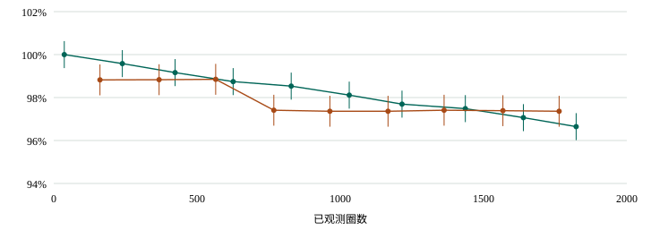

生物质多孔碳 · 第76–78轮 · 2026年11月18日万圈试验未通过，原模型保留
相同20条、15篇论文：原模型的 R² 为 0.8959，距0.95还差 0.0541。新方案降到0.8076，没有更换模型。严格独立已评分1篇，独立R²仍不可估。
同样的论文，分别整篇留出
| 范围 | 预测法 | R² | MAE¹ | RMSE¹ |
|---|
| 全部20条 | 原模型 | 0.8959 | 1.873 | 2.369 |
| 全部20条 | 相似曲线 | 0.8076 | 2.531 | 3.221 |
| 万圈12条 | 原模型 | 0.6886 | 2.168 | 2.442 |
| 万圈12条 | 相似曲线 | 0.2741 | 3.264 | 3.728 |
¹ 误差单位为保持率百分点。7条万圈记录实际换用参照：1条更准、6条更差；另外5条继续使用旧预测。早期接近，不能保证万圈终点接近

● KAC-5 万圈实测90.31%；● SPC3 万圈实测95.60%。点为原图读数，竖线为纵向读图区间。两者在500、1,000和1,500圈的插值区间均重叠。只画前段，不把后段当输入。三轮分别学到了什么
76 · 莲茎：加一篇后同批开发精度没有改善。77 · 绿茶：1,000圈冻结模型低估3.32个百分点，单列诊断。78 · 万圈：近邻借用后续衰减加大误差，已回到原方案。
下一步优先核对这对材料在原文中能否找到口径一致的孔结构、表面化学证据，以及这些字段在其他论文中的覆盖。保留困难样品。
试验说明 · 逐样品结果